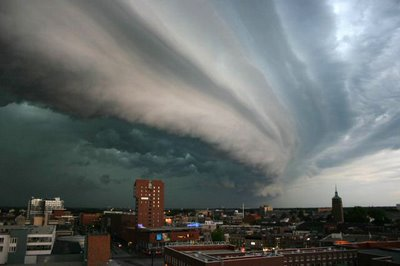
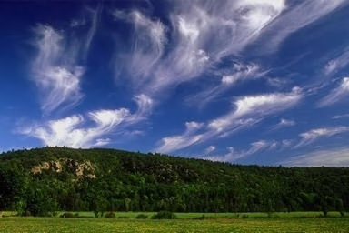

Physical Categories
Groups of Clouds
As established by Howard and his successors, clouds are commonly grouped into physical categories that can be up to five in number: cirriform, cumuliform, cumulonimbiform, stratocumuliform, and stratiform. These designations distinguish a cloud's physical structure and process of formation.
Cirriform
Cirriform-category clouds generally have a wispy fibrous appearance and form at high tropospheric altitudes along the very leading edges of a frontal or low-pressure weather disturbance and often along the fringes of its other borders. In general, they are non-convective but occasionally acquire a tufted or turreted appearance caused by small-scale high-altitude convection. These high clouds do not produce precipitation as such but are often accompanied or followed by lower-based clouds that do.
Cumuliform
Cumuliform clouds typically have flat bases and puffy domed tops. They are the product of localized but generally free-convective lift and can vary in vertical extent depending on the stability characteristics of the air mass where they are forming. The smallest cumuliform types occur with only minimal instability and can therefore be considered clouds of limited convection. Incoming short-wave radiation generated by the sun is re-emitted as long-wave radiation when it reaches Earth's surface. This process warms the air closest to ground and increases air mass instability by creating a steeper temperature gradient from warm or hot at surface level to cold aloft. Moderate instability allows for the formation of cumuliform clouds of moderate size that can produce light showers if the airmass is sufficiently moist. The more the air is heated from below, the more unstable it tends to become. This may cause large towering cumuliform clouds to form in the lower half of the troposphere with tops growing into the upper levels. These buildups can cause moderate to occasionally heavy showers. They tend to be more concentrated and intense when they are associated with fast-moving unstable cold fronts.
Cumulonimbiform
The largest free-convective cumuliform clouds often have complex structures that include cirriform tops and multiple accessory clouds and are sometimes classified separately as cumulonimbiform. At maturity, they have very strong updrafts that can penetrate the tropopause. They can produce thunderstorms and a variety of types of lightning including cloud-to-ground that can cause wildfires. Other convective severe weather may or may not be associated with thunderstorms and include heavy rain or snow showers, hail, strong wind shear, downbursts, and tornadoes.
Stratiform
In general, stratiform-category clouds have a flat sheet-like structure and form at any altitude in the troposphere where there is sufficient condensation as the result of non-convective lift of relatively stable air, especially along warm fronts, around areas of low pressure, and sometimes along stable slow moving cold fronts. In general, precipitation falls from stratiform clouds in the lower half of the troposphere. If the weather system is well-organized, the precipitation is generally steady and widespread. The intensity varies from light to heavy according to the thickness of the stratiform layer as determined by moisture content of the air and the intensity of the weather system creating the clouds and weather. Unlike free convective cumuliform and cumulonimbiform clouds that tend to grow upward, stratiform clouds achieve their greatest thickness when precipitation that forms in the middle level of the troposphere triggers downward growth of the cloud base to near surface level. Stratiform clouds can also form in precipitation below the main frontal cloud deck where the colder air is trapped under the warmer airmass being forced above by the front. Non-frontal low stratiform cloud can form when advection fog is lifted above surface level during breezy conditions.
Stratocumuliform
Clouds of this physical structure have both cumuliform and stratiform characteristics and generally form as a result of limited convection in slightly unstable air. They can form at any altitude in the troposphere wherever and whenever there is sufficient moisture and lift. High stratocumuliform clouds also tend show some cirriform characteristics or form in association with cirriform clouds. If a poorly organized low-pressure weather system is present, virga or weak intermittent precipitation may fall from those stratocumuliform clouds that form mostly in the low and lower-middle height ranges of the troposphere.
Families and cross-classification
The individual genus types result from the physical categories being cross-classified by height range family within the troposphere. A general consensus exists as to the designation of high, middle, and low families, the makeup of the basic canon of ten cloud genera that results from this cross-classification, and the family affiliation of non-vertical genus types. Several but not all methods of altitude classification treat clouds with significant vertical extent as a separate family. The base-height range for each family varies depending on the latitudinal geographical zone. Moderate and towering vertical clouds can have low or middle-altitude bases depending on the moisture content of the air.
High, Middle & Low
High
Clouds of the high family form at altitudes of 3,000 to 7,600 m (10,000 to 25,000 ft) in the polar regions, 5,000 to 12,200 m (16,500 to 40,000 ft) in the temperate regions and 6,100 to 18,300 m (20,000 to 60,000 ft) in the tropical region. All cirriform clouds are classified as high-range and thus constitute a single genus cirrus (Ci). Stratocumuliform and stratiform clouds in the high-altitude family carry the prefix cirro-, yielding the respective genus names cirrocumulus (Cc) and cirrostratus (Cs). Strato- is excluded from cirrocumulus to avoid double prefixing. Most high cloud forms as a result of natural atmospheric processes. However, contrails formed from the exhaust of high-flying aircraft can persist and spread into formations resembling cirrus, cirrocumulus, or cirrostratus. This variant has no special WMO designation, but is sometimes given the faux-Latin name Aviaticus.
Middle
The family of middle clouds typically comprises one stratocumuliform and one stratiform genus. They are prefixed by alto-, yielding the genus names altocumulus (Ac) and altostratus (As). Strato- is also excluded from altocumulus. These clouds can form as low as 2,000 m (6,500 ft) above surface at any latitude, but may be based as high as 4,000 m (13,000 ft) near the poles, 7,000 m (23,000 ft) at mid latitudes, and 7,600 m (25,000 ft) in the tropics.
Low
Low clouds are found from near surface up to 2,000 m (6,500 ft).[38] This family mainly includes one stratocumuliform and one stratiform genus whenever vertical clouds are classified separately. When a low stratiform cloud contacts the ground, it is called fog, although radiation and advection types of fog do not form from stratus layers. Genus types in this family either have no prefix or carry one that refers to a characteristic other than altitude. Of the two main cloud types in this family, the prefixed genus is stratocumulus (Sc), a low altitude cloud of limited convection, and the non-prefixed genus is non-convective stratus (St) that usually forms into a comparatively thin layer. Small fair weather cumulus (Cu) of limited convection is also often included with this family.